| Add a form to edit the data | ||
|---|---|---|
| | |
| Add a search form | Write the second page | |
We need to create a form containing various fields, we need to have a process service that allows us to select, insert, and update data on the database, and we need a context menu to call the form, possibly passing along an id (the primary key) to the form if we want to edit a particular row.
The following diagram illustrates our goal: We already have our CompanyTablePage. We'll want two menus to call our CompanyForm. When editing a company, we'll start a ModifyHandler that will select data from the database and update it when we're done; when creating a new company we'll start a NewHandler that will insert it when we're done.
As you can see the framework provides for a place to run code when preparing for a new company. This is where you could set some default values to the form.
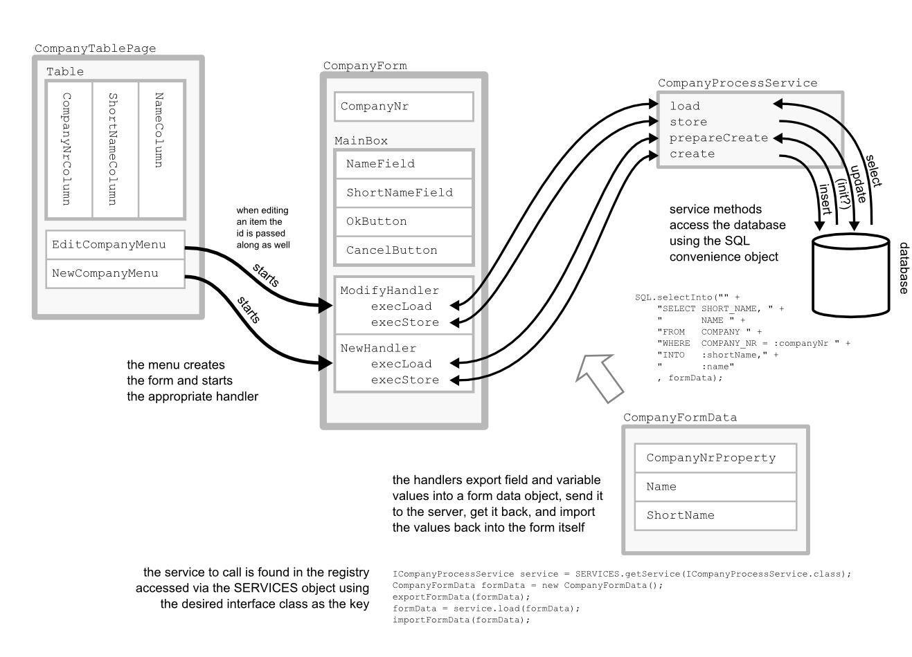
We now build a form to add and edit companies. Expand the node client of your Scout project, scroll down to the node Forms, right click on it and select New Form...
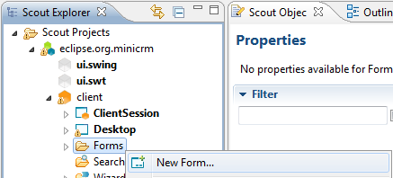
As name for the form choose Company. As you can see on the New Form Wizard a form ID called CompanyNr will automatically be created. This ID is later needed to pass the primary key of the company you want to display the data for in the form.
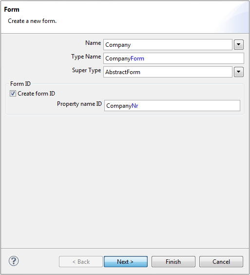
When you click Next, you'll see permissions and a process service will also be created for this form. We'll discuss these later.
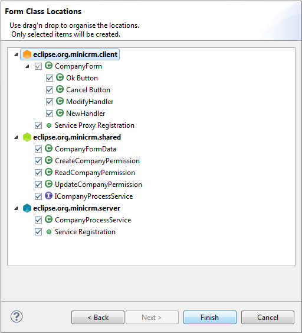
Click Finish to create the form.
When you now expand the tree below your CompanyForm you can see a MainBox. This is the mandatory root element for every form. Inside this MainBox you can now add fields as you wish by right clicking on it and choosing New Form Field.
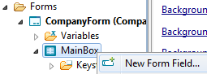
On the New Form Field wizard you need to choose a template for the field. First, we want to add a field for the company's name, therefore choose String Field. Click Next and enter the name of the field ("Name") and then click Finish.
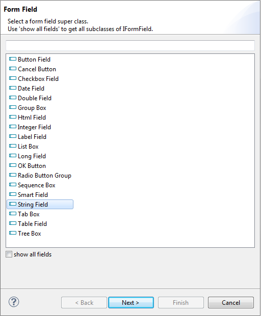

Now proceed in the same way and add a field for the Short Name.
You should already have an Ok button (OK Button template) and a Cancel button (Cancel Button template). The two buttons don't need a name since they'll get appropriate names from their template.
Go to the server node of your Scout project, open the node Process Service and expand it. Double click on the entry CompanyProcessService in order to open it.
public class CompanyProcessService extends AbstractService implements ICompanyProcessService{
public CompanyFormData prepareCreate(CompanyFormData formData) throws ProcessingException{
if(!ACCESS.check(new CreateCompanyPermission())){
throw new VetoException(Texts.get("AuthorizationFailed"));
}
// TODO business logic here
return formData;
}
public CompanyFormData create(CompanyFormData formData) throws ProcessingException{
if(!ACCESS.check(new CreateCompanyPermission())){
throw new VetoException(Texts.get("AuthorizationFailed"));
}
// TODO business logic here
return formData;
}
public CompanyFormData load(CompanyFormData formData) throws ProcessingException{
if(!ACCESS.check(new ReadCompanyPermission())){
throw new VetoException(Texts.get("AuthorizationFailed"));
}
// TODO business logic here
return formData;
}
public CompanyFormData store(CompanyFormData formData) throws ProcessingException{
if(!ACCESS.check(new UpdateCompanyPermission())){
throw new VetoException(Texts.get("AuthorizationFailed"));
}
// TODO business logic here
return formData;
}
}
As you can see, the generated process service contains four methods. If you check from where they are called (Ctrl+Shift+G), you will notice that the callers are two form handlers: a NewHandler and a ModifyHandler.
These two handlers are inner classes of the company form. You can see them in the Scout SDK as well: expand the CompanyForm node and you'll find the Handlers node right there.
Form handlers are used to start a form in a particular mode. For instance, if you want to use your form to add a new company, you want to bring it up empty. On the other hand, if you want to use it to edit an already existing company, you want to bring it up already containing the company's values.
Generally speaking, we'll use execLoad and execStore for every handler. Here's how our CompanyProcessService methods are called:
| Form Handler | Handler Method | Process Server Method |
|---|---|---|
| ModifyHandler | execLoad | load |
| execStore | store | |
| NewHandler | execLoad | prepareCreate |
| execStore | create |
A FormHandler's methods are executed in a specified order. With that, you can control a form's processing at different moments or with the form in different state:
Please consult the javadoc of these methods for details.
Furthermore you can see in the source code generated that Permissions are checked. These checks exist on both the client and on the server side. On the client side, these are simple convenience checks to prevent the user from changing fields if they cannot be saved. We need similar checks on the server side to handle service calls from outside the client. The process service could potentially be used by an interface, for example.
To begin with, we want to edit an existing company.
Go to the load method of the CompanyProcessService and select the data to be displayed using the SQL method SQL.selectInto.
SQL.selectInto("" +
"SELECT SHORT_NAME, " +
" NAME " +
"FROM COMPANY " +
"WHERE COMPANY_NR = :companyNr " +
"INTO :shortName," +
" :name"
, formData);
The INTO clause of your SQL statement will refer to form fields by prefixing them with a colon. These are the bind variables. A field called ShortName will be referred to as :shortName. Don't forget the naming conventions: downcase the first character.
If your form data is up to date, you can use content assistance after the colon: press CTRL-Space to complete on the fields. If some (or all) of the fields are missing, you need to update your form data (e.g. if you have disabled the auto update mechanism of Scout SDK).
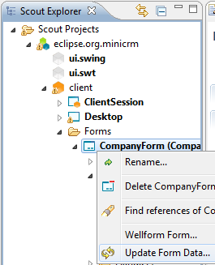
In the WHERE clause you need to specify the company's primary key. This is contained in the variable companyNr. Remember, when we created the form this id was created for us as well. You can find it in the Variables section of the CompanyForm.
If you want to load data from a service, you need to export data from the form into the form data (the primary key in particular). Once the call returns you need to import the data from the form data back into the form.
Forms provide an import and export method, respectively. Therefore loading data into and storing them from a form into a form data is just a single method call. This has already been automatically added by Scout in the FormHandler methods:
@Override
public void execLoad() throws ProcessingException{
ICompanyProcessService service = SERVICES.getService(ICompanyProcessService.class);
CompanyFormData formData = new CompanyFormData();
exportFormData(formData);
formData = service.load(formData);
importFormData(formData);
setEnabledPermission(new UpdateCompanyPermission());
}
The last thing to do is to actually call the form and to open it. In order to do that we need a menu on the CompanyTablePage. Go to your CompanyTablePage expand it, go to the table, click on the Menu node, right click and choose New Menu....
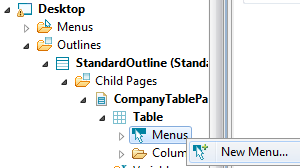
Enter the name of the menu: Edit Company... (and add a new translated text). Specify CompanyForm as the Form to start, choose ModifyHandler as the Form handler, and click Finish.
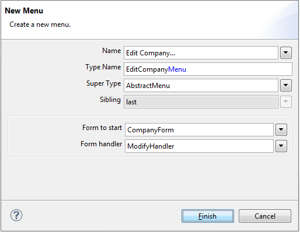
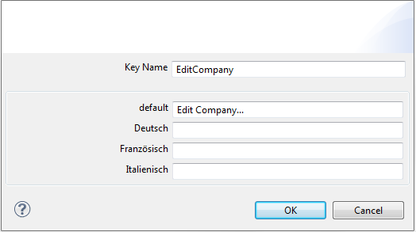
Now we need to edit the store method in the CompanyProcessService and add the sql statement for the update.
@Override
public CompanyFormData store(CompanyFormData formData) throws ProcessingException {
if(!ACCESS.check(new UpdateCompanyPermission())){
throw new VetoException(TEXTS.get("AuthorizationFailed"));
}
SQL.update(
"UPDATE COMPANY SET" +
" SHORT_NAME = :shortName, " +
" NAME = :name " +
"WHERE COMPANY_NR = :companyNr", formData);
return formData;
}
Make sure that you don't end up with code like this:
" NAME = :name" +
"WHERE COMPANY_NR = :companyNr", formData);
This would result in ...":nameWHERE"...
If you open the generated EditCompanyMenu you see that code for the execAction method has been generated for you. This code opens the form and calls the handler.
The companyNr is available in the CompanyNrColumn of the table. We just need to find the value in said column for the selected row. The auto generated code should look like this:
@Override
public void execAction() throws ProcessingException {
CompanyForm form = new CompanyForm();
form.setCompanyNr(getCompanyNrColumn().getSelectedValue());
form.startModify();
form.waitFor();
if (form.isFormStored()){
reloadPage();
}
}
The method startModify starts the modify handler. The waitFor interrupts the execution at this point, until the form is closed again. With isFormStored we check wether the user has closed the form by pressing the OK-Button (form values are stored) or by pressing the Cancel-Button (form values are discarded). In the first case we reload the current table the see the changes instantly.
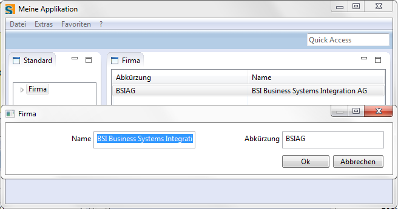
Can you create a second menu to create new companies? Sure you can!
Here are some hints:
You need a NewCompanyMenu. It needs an execAction that runs the New Handler.
CompanyForm form = new CompanyForm();
form.startNew();
form.waitFor();
if (form.isFormStored()) {
reloadPage();
}
The new menu should not appear on existing rows. Instead, it should appear when no row has been selected. Uncheck the Single Select Action property to do this.
You already have a NewHandler so the only thing you need to do is write appropriate code for the create method of the CompanyProcessService. There's currently nothing to do before the actual INSERT statement, thus we do not need to write anything for the prepareCreate method.
Unfortunately, the COMPANY_NR column in the sample DB has not been declared as an auto increment column (GENERATED ALWAYS AS IDENTITY (START WITH 1, INCREMENT BY 1)). For the purpose of this tutorial, we need to work around this within our application. (Yes, this is a terrible excuse...)
Here's what we do for create:
SQL.selectInto("" +
"SELECT MAX(COMPANY_NR)+1 " +
"FROM COMPANY " +
"INTO :companyNr"
, formData);
SQL.insert("" +
"INSERT INTO COMPANY (COMPANY_NR, SHORT_NAME, NAME) " +
"VALUES (:companyNr, :shortName, :name)"
, formData);
|  | |
| Add a search form | Write the second page |